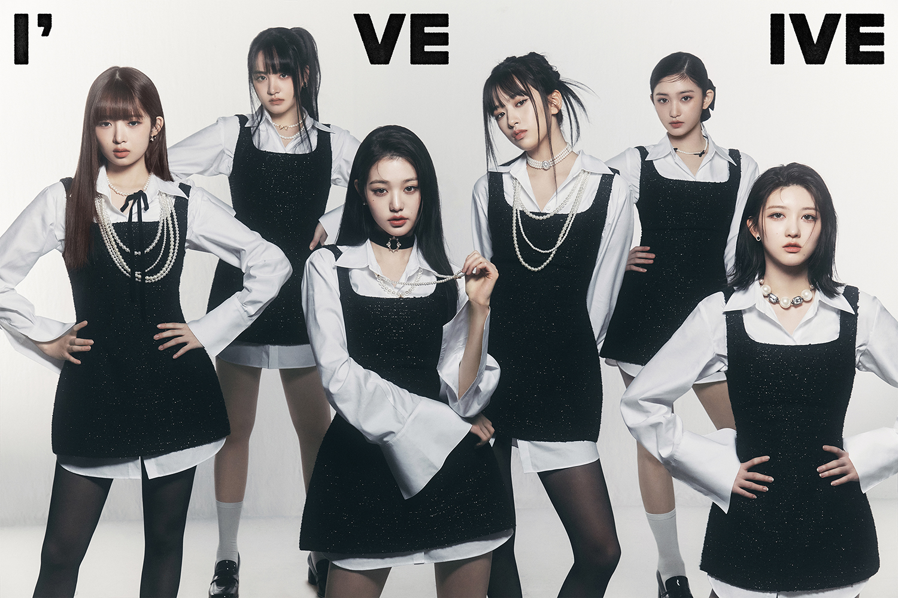

DIVE INTO IVE
IVE
I HAVE. WE HAVE. IVE.

關於 IVE
IVE 是韓國娛樂公司 STARSHIP Entertainment 旗下的六人女子團體，於 2021 年 12 月 1 日以《ELEVEN》出道。
成員包括 Yujin、Gaeul、Rei、Wonyoung、Liz、Leeseo。團名源自「I HAVE」，代表自信展現自己擁有的魅力 , 粉絲名稱為 DIVE。
從充滿節奏感的出道歌曲，到夢幻與自信兼具的音樂，一起認識 IVE 吧！